3. Java Web 开发基础
接下来我们将讨论动态 Web 应用程序的开发，即那些发送给用户的 HTML 页面由程序生成的应用程序。
3.1. 在 Eclipse 中创建 Web 项目
我们将使用 Eclipse/Tomcat 开发我们的第一个 Web 应用程序。我们将遵循一个与不使用 Eclipse 创建 Web 应用程序类似的流程。在运行 Eclipse 的情况下，我们创建一个新项目：
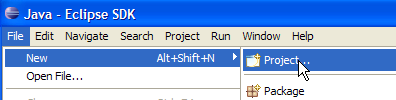
并将该项目定义为动态 Web 项目：

在创建向导的第一页，我们指定项目名称 [1] 及其位置 [2]：

在向导的第二页，我们接受默认值：

向导的最后一页要求我们定义应用程序的上下文 [3]：

点击 [完成] 确认向导后，Eclipse 将连接到站点 [http://java.sun.com] 以检索某些需要缓存的文档，从而避免不必要的网络流量。随后将要求签署许可协议：

我们接受该协议。Eclipse 随即创建 Web 项目。为了显示该项目，它使用了一种称为“视图”的环境，这与传统 Java 项目所用的环境不同：

与 Web 项目关联的视图是 J2EE 视图。我们接受该视图以查看……结果如下：

对于简单的 Web 项目而言，J2EE 视图实际上过于复杂。在这种情况下，Java 视图就足够了。要访问它，我们使用选项 [窗口 -> 打开视图 -> Java]：

src：将包含应用程序类的 Java 代码，以及必须位于应用程序类路径中的文件。
build/classes（未显示）：将包含已编译类的 .class 文件，以及 src 目录中所有非 .java 文件的副本。Web 应用程序经常使用所谓的“资源”文件，这些文件必须位于应用程序的类路径中，即当应用程序在编译或运行时引用某个类时，JVM 会搜索的目录集合。 Eclipse 会确保 build/classes 目录是 Web 类路径的一部分。将“资源”文件放置在 src 文件夹中，因为 Eclipse 会自动将其复制到 build/classes 中。
WebContent：将包含无需位于应用程序类路径中的 Web 应用程序资源。
WEB-INF/lib：包含 Web 应用程序所需的 .jar 文件。
让我们查看配置 [person] 应用程序的 [WEB-INF/web.xml] 文件的内容：
<?xml version="1.0" encoding="UTF-8"?>
<web-app id="WebApp_ID" version="2.4" xmlns="http://java.sun.com/xml/ns/j2ee" xmlns:xsi="http://www.w3.org/2001/XMLSchema-instance" xsi:schemaLocation="http://java.sun.com/xml/ns/j2ee http://java.sun.com/xml/ns/j2ee/web-app_2_4.xsd">
<display-name> personne</display-name>
<welcome-file-list>
<welcome-file>index.html</welcome-file>
<welcome-file>index.htm</welcome-file>
<welcome-file>index.jsp</welcome-file>
<welcome-file>default.html</welcome-file>
<welcome-file>default.htm</welcome-file>
<welcome-file>default.jsp</welcome-file>
</welcome-file-list>
</web-app>
我们在第 2.3.4 节学习创建欢迎页面时已经遇到过这种配置。该文件的作用仅限于定义一系列欢迎页面。我们只保留第一个。此时 [web.xml] 文件内容如下：
<?xml version="1.0" encoding="UTF-8"?>
<web-app id="WebApp_ID" version="2.4"
xmlns="http://java.sun.com/xml/ns/j2ee"
xmlns:xsi="http://www.w3.org/2001/XMLSchema-instance"
xsi:schemaLocation="http://java.sun.com/xml/ns/j2ee http://java.sun.com/xml/ns/j2ee/web-app_2_4.xsd">
<display-name>personne</display-name>
<welcome-file-list>
<welcome-file>index.html</welcome-file>
</welcome-file-list>
</web-app>
上述 XML 文件的内容必须符合开头 <web-app> 标签的 [xsi:schemaLocation] 属性所指定的文件中定义的语法规则。该文件位于 [http://java.sun.com/xml/ns/j2ee/web-app_2_4.xsd]。 这是一个可以通过网页浏览器直接访问的 XML 文件。如果浏览器版本足够新，它将能够显示该 XML 文件：
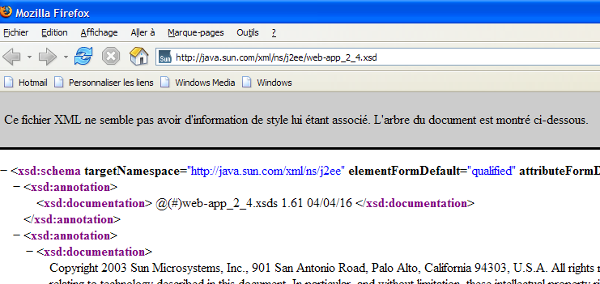
Eclipse 将尝试使用在 <web-app> 标签的 [xsi:schemaLocation] 属性中指定的 .xsd 文件来验证 XML 文档。为此，它会发起一个网络请求。如果您的计算机位于私有网络中，您必须告诉 Eclipse 使用哪台机器来连接到外部网络，即所谓的 HTTP 代理。这可以通过 [窗口 -> 首选项 -> 互联网] 选项来设置：

如果您处于私有网络中，请勾选复选框 (1)。在 (2) 中，输入托管 HTTP 代理的机器名称；在 (3) 中，输入其监听端口。最后，在 (4) 中，指定应绕过代理的机器——即与您当前工作机器位于同一私有网络中的机器。
接下来，我们将创建用于主页的 [index.html] 文件。
3.2. 创建主页
右键单击 [WebContent] 文件夹，然后选择 [新建 -> 其他]：
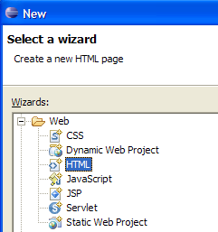
选择 [HTML] 类型，然后点击 [下一步] ->

在上图中，在 (1) 或 (2) 处选择父文件夹 [WebContent]，然后在 (3) 处指定要创建的文件名。完成后，进入向导的下一页：

勾选 (1) 时，系统将生成一个预填充了 (2) 内容的 HTML 文件。若取消勾选 (1)，则生成一个空的 HTML 文件。我们保持 (1) 勾选状态，以便利用代码模板。点击 [完成] 结束向导。随后将生成 [index.html] 文件：
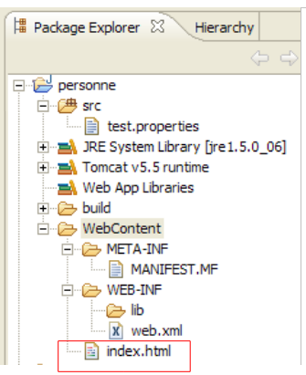
内容如下：
<!DOCTYPE HTML PUBLIC "-//W3C//DTD HTML 4.01 Transitional//EN">
<html>
<head>
<meta http-equiv="Content-Type" content="text/html; charset=ISO-8859-1">
<title>Insert title here</title>
</head>
<body>
</body>
</html>
我们将此文件修改如下：
<!DOCTYPE HTML PUBLIC "-//W3C//DTD HTML 4.01 Transitional//EN">
<html>
<head>
<meta http-equiv="Content-Type" content="text/html; charset=ISO-8859-1">
<title>Application personne</title>
</head>
<body>
Application personne active...
<br>
<br>
Vous êtes sur la page d'accueil
</body>
</html>
3.3. 测试主页
如果未显示，请通过选项 [窗口 -> 显示视图 -> 其他 -> 服务器] 显示 [服务器] 视图，然后右键单击 Tomcat 5.5 服务器：

上方的 [添加和删除对象] 选项允许您向 Tomcat 服务器添加或移除 Web 应用程序：
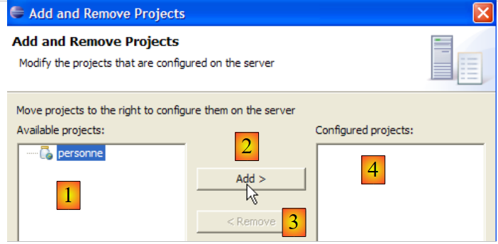
Eclipse 识别的 Web 项目列在 (1) 中。您可以通过 (2) 将其注册到 Tomcat 服务器。已注册到 Tomcat 服务器的 Web 应用程序会显示在 (4) 中。您可以通过 (3) 取消注册。现在让我们注册 [person] 项目：

然后点击 [完成] 完成注册向导。在 [服务器] 视图中，可以看到 [person] 项目已注册到 Tomcat 上：

现在，让我们启动 Tomcat 服务器：
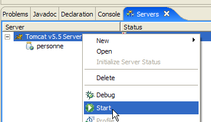 |  |
启动网页浏览器：

然后输入网址 [http://localhost:8080/personne]。该网址是 Web 应用程序的根目录。此时未请求任何文档。在这种情况下，将显示应用程序的首页。如果首页不存在，则会报告错误。这里，首页是存在的。它就是我们之前创建的 [index.html] 文件。结果如下：

这与预期结果一致。现在，让我们使用 Eclipse 外部的浏览器请求相同的 URL：

因此，[person] Web 应用程序在 Eclipse 外部同样可以访问。
3.4. 创建 HTML 表单
现在，我们将在 [person] 文件夹中创建一个静态 HTML 文档 [form.html]：

创建方法请参照第 3.2 节（第 33 页）中的说明。其内容如下：
<!DOCTYPE HTML PUBLIC "-//W3C//DTD HTML 4.01 Transitional//EN">
<html>
<head>
<title>Personne - formulaire</title>
</head>
<body>
<center>
<h2>Personne - formulaire</h2>
<hr>
<form action="" method="post">
<table>
<tr>
<td>Nom</td>
<td><input name="txtNom" value="" type="text" size="20"></td>
</tr>
<tr>
<td>Age</td>
<td><input name="txtAge" value="" type="text" size="3"></td>
</tr>
</table>
<table>
<tr>
<td><input type="submit" value="Envoyer"></td>
<td><input type="reset" value="Retablir"></td>
<td><input type="button" value="Effacer"></td>
</tr>
</table>
</form>
</center>
</body>
</html>
上面的 HTML 代码对应下面的表单：

HTML 类型 | 名称 | HTML 代码 | 角色 | |
<input type="text"> | txtName | 第 14 行 | 输入姓名 | |
<input type="text"> | txtAge | 第 18 行 | 年龄输入 | |
<input type="submit"> | 第 23 行 | 将输入的值发送至 URL /person1/main 所在的服务器 | ||
<input type="reset"> | 第 24 行 | 将页面恢复到浏览器最初接收时的状态 | ||
<input type="button"> | 第 25 行 | 用于清空输入字段 [1] 和 [2] 的内容 |
将文档保存到 <person>/WebContent 文件夹中。如有必要，请启动 Tomcat。使用浏览器访问 URL http://localhost:8080/personne/formulaire.html：
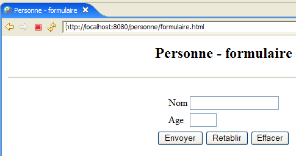
此基础应用程序的客户端/服务器架构如下：
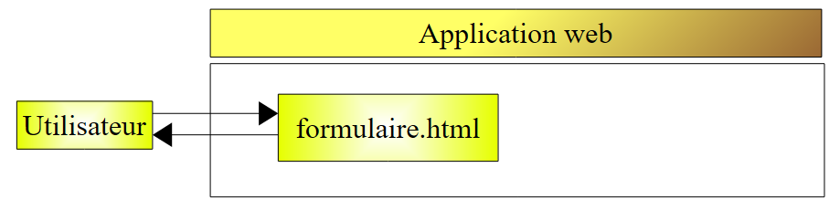
Web 服务器位于用户与 Web 应用程序之间，此处未作展示。[formulaire.html] 是一个静态文档，它会对每个客户端请求返回相同的内容。Web 编程旨在生成符合客户端请求的内容。该内容随后通过编程方式生成。一种解决方案是使用 JSP（Java Server Page）来代替静态 HTML 文件。这就是我们接下来要探讨的内容。
3.5. 创建 JSP 页面
参考资料 [ref1]：第 1 章，第 2 章：2.2、2.2.1、2.2.2、2.2.3、2.2.4
先前的客户端/服务器架构转变如下：

JSP 页面是一种参数化 HTML 页面。页面中的某些元素仅在运行时才获得其值。这些值由程序计算得出。 因此，我们得到一个动态页面：对该页面的连续请求可能会产生不同的响应。这里，我们将客户端浏览器显示的 HTML 页面称为响应。最终，浏览器总是会收到一个 HTML 文档。该 HTML 文档由 Web 服务器根据 JSP 页面（作为模板）生成的，其动态元素会在生成 HTML 文档时被替换为实际值。
要创建一个 JSP 页面，请右键单击 [WebContent] 文件夹，然后选择 [新建 -> 其他] 选项：

我们选择 [JSP] 类型，然后点击 [下一步] ->

在上图中，我们在 (1) 或 (2) 处选择父文件夹 [WebContent]，然后在 (3) 处指定要创建的文件名。完成此操作后，我们将进入向导的下一页：

勾选 (1) 时，系统将生成一个预填充了 (2) 内容的 JSP 文件。若取消勾选 (1)，则生成一个空的 JSP 文件。我们保持 (1) 勾选状态，以便利用代码模板。点击 [完成] 结束向导。随后将生成 [formulaire.jsp] 文件：

其内容如下：
<%@ page language="java" contentType="text/html; charset=ISO-8859-1" pageEncoding="ISO-8859-1"%>
<!DOCTYPE HTML PUBLIC "-//W3C//DTD HTML 4.01 Transitional//EN">
<html>
<head>
<meta http-equiv="Content-Type" content="text/html; charset=ISO-8859-1">
<title>Insert title here</title>
</head>
<body>
</body>
</html>
第 1 行表明我们正在处理一个 JSP 页面。我们将上面的文本转换如下：
<%@ page language="java" contentType="text/html; charset=ISO-8859-1"
pageEncoding="ISO-8859-1"%>
<!DOCTYPE HTML PUBLIC "-//W3C//DTD HTML 4.01 Transitional//EN">
<%
// on récupère les paramètres
String nom=request.getParameter("txtNom");
if(nom==null) nom="inconnu";
String age=request.getParameter("txtAge");
if(age==null) age="xxx";
%>
<html>
<head>
<meta http-equiv="Content-Type" content="text/html; charset=ISO-8859-1">
<title>Personne - formulaire</title>
</head>
<body>
<center>
<h2>Personne - formulaire</h2>
<hr>
<form action="" method="post">
<table>
<tr>
<td>Nom</td>
<td><input name="txtNom" value="<%= nom %>" type="text" size="20"></td>
</tr>
<tr>
<td>Age</td>
<td><input name="txtAge" value="<%= age %>" type="text" size="3"></td>
</tr>
</table>
<table>
<tr>
<td><input type="submit" value="Envoyer"></td>
<td><input type="reset" value="Rétablir"></td>
<td><input type="button" value="Effacer"></td>
</tr>
</table>
</form>
</center>
</body>
</html>
通过引入 Java 代码，最初静态的文档现已变得动态。对于此类文档，我们将始终按照以下步骤进行：
- 我们将 Java 代码置于文档开头，以获取文档显示所需的参数。这些参数通常可在请求对象中找到。该对象代表客户端的请求。它可能已经过多个 Servlet 和 JSP 页面的处理，这些组件可能已对其进行了丰富。在此处，它将直接来自浏览器。
- 随后是 HTML 代码。它通常仅通过 <%= 变量 %> 标签来显示 Java 代码中先前计算出的变量。请注意，等号（=）紧贴在百分号（%）旁边。这是常见的错误原因。
上述动态文档的作用是什么？
- 第 6–9 行：它从请求中检索两个名为 [txtNom] 和 [txtAge] 的参数，并将它们的值分别赋给变量 [nom]（第 6 行）和 [age]（第 8 行）。如果未找到这些参数，则为相关变量赋予默认值。
- 它在以下 HTML 代码中（第 25 行和第 29 行）显示了两个变量 [name] 和 [age] 的值。
让我们进行初步测试。如有必要，请启动 Tomcat，然后使用浏览器访问 URL http://localhost:8080/personne/formulaire.jsp：

form.jsp 文档是在未传递任何参数的情况下调用的。因此显示的是默认值。现在让我们请求 URL http://localhost:8080/personne/formulaire.jsp?txtNom=martin&txtAge=14：

这次，我们向 form.jsp 页面传递了 txtNom 和 txtAge 这两个参数，这正是该页面所期望的。随后，页面显示了这些参数。我们知道，向网页传递参数有两种方法：GET 和 POST。无论哪种情况，传递的参数都会存储在预定义的 request 对象中。在此示例中，参数是通过 GET 方法传递的。
3.6. 创建 Servlet
参考资料 [ref1]：第 1 章，第 2 章：2.1、2.1.1、2.1.2、2.3.1
在上一版本中，客户端的请求由一个 JSP 页面处理。当首次调用该页面时，Web 服务器（此处为 Tomcat）会根据该页面生成一个 Java 类并进行编译。最终处理客户端请求的正是该编译结果。由 JSP 页面生成的类是一个 Servlet，因为它实现了 [javax.Servlet] 接口：
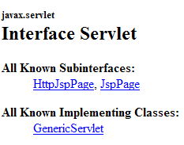
任何实现该接口的类均可处理客户端请求。现在我们将构建这样一个类：ServletFormulaire。之前的客户端/服务器架构将转变为如下形式：

在基于 JSP 的架构中，发送给客户端的 HTML 文档是由 Web 服务器根据作为模板的 JSP 页面生成的。而在这里，发送给客户端的 HTML 文档将完全由 Servlet 生成。
3.6.1. 创建 Servlet
在 Eclipse 中，右键单击 [src] 文件夹，然后选择创建类的选项：

然后定义要创建的类的属性：
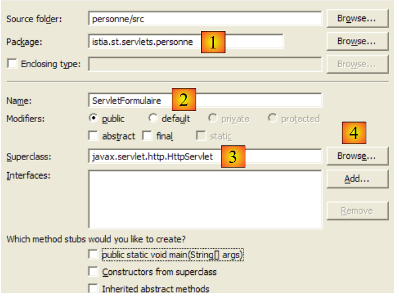
在 (1) 中输入包名；在 (2) 中输入要创建的类名。该类必须继承 (3) 中指定的类。您无需手动输入类的全名。通过 (4) 按钮可访问 Web 应用程序类路径中当前存在的类：

在 (1) 中，输入您要查找的类名。在 (2) 中，您将看到类路径中名称包含 (1) 中输入的字符串的类。
确认创建向导后，[person] Web 项目将按以下方式进行修改：
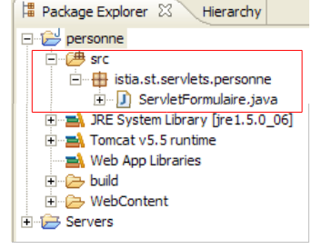
已创建 [ServletFormulaire] 类，并生成代码骨架：

上图显示，Eclipse 在声明该类的行上显示了一个 [警告]。点击表示此 [警告] 的图标（灯泡）：
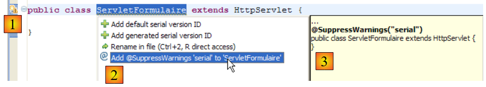
点击 (1) 后，(2) 处会提供消除该 [警告] 的解决方案。选择其中一个方案后，(3) 处将显示该选择所导致的代码变更。
Java 1.5 对 Java 语言进行了改动，以前版本中正确的代码现在可能会触发 [警告]。这些警告并不表示会导致类无法编译的错误，而是为了引起开发者的注意，指出代码中可以改进的地方。 当前的 [警告] 提示该类应包含版本号。此版本号用于对象的序列化/反序列化，即当内存中的 Java .class 对象必须转换为写入流中按顺序发送的位序列时，或反之，当内存中的 Java .class 对象必须从读取流中按顺序读取的位序列创建时。这些内容与我们当前的关注点相去甚远。 因此，我们将通过选择 [Add @SuppressWarnings ...] 选项，让编译器忽略此警告。代码随后变为如下形式：
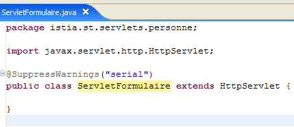
不再有 [警告]。添加的这一行被称为“注解”，这是 Java 1.5 中引入的概念。我们稍后将完善这段代码。
3.6.2. Eclipse 项目的类路径
Java 应用程序的类路径是指编译器进行编译或 JVM 执行程序时所搜索的文件夹和 .jar 文件集合。这两个类路径并不一定完全相同，因为某些类仅在运行时需要，而在编译时则不需要。Java 编译器和 JVM 都提供了一个参数，允许您指定待编译或执行的应用程序的类路径。 Eclipse 会以对用户而言基本透明的方式，处理该参数的构建并将其传递给 JVM。
如何确定 Eclipse 项目类路径的组成元素？请使用 [<项目> / 构建路径 / 配置构建路径] 选项：

这将调出以下配置向导：

(1) [库] 选项卡允许您定义属于应用程序类路径的 .jar 文件列表。因此，当应用程序请求某个类时，JVM 会搜索这些文件。 按钮 [2] 和 [3] 允许您将归档文件添加到类路径中。按钮 [2] 允许您选择位于 Eclipse 管理项目文件夹中的归档文件，而按钮 [3] 允许您从计算机的文件系统中选择任何归档文件。
上图中显示了三个库：
- [JRE 系统库]：Eclipse Java 项目的基库：

- [Tomcat v5.5 运行时]：由 Tomcat 服务器提供的库。它包含 Web 开发所需的类。任何已与 Tomcat 服务器关联的 Eclipse Web 项目都会包含此库。

正是 [servlet-api.jar] 压缩包包含了 [javax.servlet.http.HttpServlet] 类，该类是我们当前正在创建的 [ServletFormulaire] 类的父类。正是因为该压缩包位于应用程序的类路径中，才会在下图所示的向导中将其建议为父类。

如果情况并非如此，它就不会出现在[2]中的建议列表中。因此，若在此向导中您想引用某个父类但未被建议，则意味着您要么拼写了类名，要么包含该类的归档文件未位于应用程序的类路径中。
- [Web App Libraries] 包含位于项目 [WEB-INF/lib] 文件夹中的归档文件。此处为空：

Eclipse 项目类路径中的归档文件可在项目资源管理器中看到。例如，对于 [person] Web 项目：

通过项目资源管理器，我们可以访问这些归档文件的内容：

如上所示，我们可以看到 [servlet-api.jar] 归档文件中包含 [javax.servlet.http.HttpServlet] 类。
3.6.3. Servlet 配置
参考资料 [ref1]：第 2 章：2.3、2.3.1、2.3.2、2.3.3、2.3.4
[WEB-INF/web.xml] 文件用于配置 Web 应用程序：

对于 [person] 项目，该文件目前如下所示（参见第 32 页）：
<?xml version="1.0" encoding="UTF-8"?>
<web-app id="WebApp_ID" version="2.4"
xmlns="http://java.sun.com/xml/ns/j2ee"
xmlns:xsi="http://www.w3.org/2001/XMLSchema-instance"
xsi:schemaLocation="http://java.sun.com/xml/ns/j2ee http://java.sun.com/xml/ns/j2ee/web-app_2_4.xsd">
<display-name>personne</display-name>
<welcome-file-list>
<welcome-file>index.html</welcome-file>
</welcome-file-list>
</web-app>
这仅表示存在一个欢迎文件（第 8 行）。我们对其进行修改以声明：
- 声明 [ServletFormulaire] Servlet 存在
- 该 Servlet 处理的 URL
- Servlet 的初始化参数
我们应用程序的 web.xml 文件将如下所示：
<?xml version="1.0" encoding="UTF-8"?>
<web-app id="WebApp_ID" version="2.4"
xmlns="http://java.sun.com/xml/ns/j2ee"
xmlns:xsi="http://www.w3.org/2001/XMLSchema-instance"
xsi:schemaLocation="http://java.sun.com/xml/ns/j2ee http://java.sun.com/xml/ns/j2ee/web-app_2_4.xsd">
<display-name>personne</display-name>
<servlet>
<servlet-name>formulairepersonne</servlet-name>
<servlet-class>
istia.st.servlets.personne.ServletFormulaire
</servlet-class>
<init-param>
<param-name>defaultNom</param-name>
<param-value>inconnu</param-value>
</init-param>
<init-param>
<param-name>defaultAge</param-name>
<param-value>XXX</param-value>
</init-param>
</servlet>
<servlet-mapping>
<servlet-name>formulairepersonne</servlet-name>
<url-pattern>/formulaire</url-pattern>
</servlet-mapping>
<welcome-file-list>
<welcome-file>index.html</welcome-file>
</welcome-file-list>
</web-app>
此配置文件的主要要点如下：
- 第 7–24 行与 [ServletFormulaire] Servlet 的存在相关
- 第 7–20 行：Servlet 的配置位于 <servlet> 和 </servlet> 标签之间。一个应用程序可以包含多个 Servlet，因此也可以包含多个 <servlet>...</servlet> 配置段。
- 第 8 行：<servlet-name> 标签为 Servlet 指定一个名称——名称可以是任意内容
- 第 9–11 行：<servlet-class> 标签指定了 Servlet 的完整类名。Tomcat 将在 Web 项目的类路径 [personne] 中查找该类。它将在 [build/classes] 中找到它：

- 第 12–15 行：<init-param> 标签用于向 Servlet 传递配置参数。这些参数通常在 Servlet 的 init 方法中读取，因为其配置参数必须在 Servlet 首次加载时即已知晓。
- 第 13–14 行：<param-name> 标签用于设置参数名称，<param-value> 标签用于设置其值。
- 第 12–15 行定义了一个参数 [defaultName, "unknown"]，第 16–19 行定义了一个参数 [defaultAge, "XXX"]
- 第 21–24 行：<servlet-mapping> 标签用于将一个 Servlet（servlet-name）与一个 URL 模式（url-pattern）关联起来。 此处的模式很简单。它指定，只要 URL 采用 /formulaire 的形式，就必须使用 formulairepersonne servlet，即类 [istia.st.servlets.ServletFormulaire]（第 8–11 行）。因此，[formulairepersonne] servlet 只接受一个 URL。
3.6.4. [ServletFormulaire] Servlet 的代码
[ServletFormulaire] Servlet 的代码如下：
仅通过阅读该 Servlet，我们就能发现它比对应的 JSP 页面复杂得多。这是一个普遍规律：Servlet 不适合生成 HTML 代码。JSP 页面正是为此目的而设计的。我们稍后将有机会再次探讨这一点。让我们先澄清一下上述 Servlet 的几个要点：
- 当 Servlet 被首次调用时，会调用其 init 方法（第 20 行）。这是该方法被调用的唯一一次。
- 如果 Servlet 是通过 HTTP GET 方法调用的，则会调用 doGet 方法（第 32 行）来处理客户端的请求。
- 如果通过 HTTP POST 方法调用 Servlet，则调用 doPost 方法（第 82 行）来处理客户端的请求。
此处使用 init 方法从 [web.xml] 中获取名为“defaultName”和“defaultAge”的初始化参数的值。init 方法在 Servlet 首次加载时执行，是获取 [web.xml] 文件内容的合适位置。
- 第 22 行：检索 Web 项目的 [config] 配置。该对象反映了应用程序 [WEB-INF/web.xml] 文件的内容。
- 第 23 行：在此配置中，我们获取名为“defaultName”的参数的 String 值。该参数将包含一个人的姓名。如果不存在，该值将为 null。
- 第 24–25 行：如果名为 "defaultName" 的参数不存在，则为变量 [defaultName] 赋值默认值。
- 第 26–29 行：我们对名为 "defaultAge" 的参数执行相同的操作。
doPost 方法与 doGet 方法相关联。这意味着客户端既可以通过 POST 请求，也可以通过 GET 请求发送参数。
doGet 方法：
- 第 32 行：该方法接收两个参数，`request` 和 `response`。`request` 是一个表示整个客户端请求的对象。它的类型是 `HttpServletRequest`，这是一个接口。`response` 的类型是 `HttpServletResponse`，这也是一个接口。`response` 对象用于向客户端发送响应。
- 使用 `request.getParameter("param")` 从客户端请求中获取名为 "param" 的参数值。第 36 行中，我们获取 "txtNom" 参数的值；第 40 行中，获取 "txtAge" 参数的值。如果请求中不存在这些参数，则将参数值设置为 null。
- 第 37–39 行：如果请求中不存在 "txtNom" 参数，则将变量 "nom" 赋值为在 init 方法中初始化的默认名称 "defaultNom"。第 41–43 行对年龄参数也进行了同样的处理。
- 第 45 行：使用 response.setContentType(String) 设置 HTTP Content-Type 头部的值。该头部告知客户端将接收文档的类型。类型 text/html 表示 HTML 文档。
- 第 46 行：使用 response.getWriter() 获取写入客户端的写入流
- 第 47–78 行：将要发送给客户端的 HTML 文档写入第 46 行获取的写入流中。
编译此 Servlet 将在 [person] 项目的 [build/classes] 文件夹中生成一个 .class 文件：
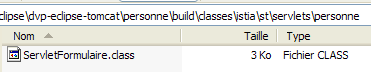
建议读者查阅 Java 关于 Servlet 的文档。Tomcat 可用于此目的。在 Tomcat 5 主页上，有一个 [文档] 链接：

建议读者浏览该链接指向的页面。Servlet 文档的链接如下：

3.6.5. 测试 Servlet
现在我们可以进行测试了。如有必要，请启动 Tomcat 服务器。

随后，使用浏览器访问 URL [http://localhost:8080/personne/formulaire]。此处，我们从上下文 [/person] 中请求 URL [/form]。该上下文的 [web.xml] 文件指定 URL [/form] 由名为 [formperson] 的 Servlet 处理。 在同一文件中，还指定了该 Servlet 对应类为 [istia.st.servlets.ServletFormulaire]。因此，Tomcat 将委托该类处理客户端请求。如果该类尚未加载，系统会自动加载它。加载后，该类将驻留在内存中以供后续请求使用。
使用 Eclipse 的内置浏览器，我们得到以下结果：

我们获得了 [web.xml] 文件中指定的 name 和 age 的默认值。现在让我们请求 URL [http://localhost:8080/personne/formulaire?txtNom=tintin&txtAge=30]：

这次，我们获取到了请求中传递的参数。若读者对这两个结果尚有疑问，建议查阅 [ServletFormulaire] Servlet 的代码。
3.6.6. Web 应用程序上下文的自动刷新
现在启动 Tomcat：

然后按如下方式修改 Servlet 代码：
- 第 8 行已修改
让我们保存这个新类。此次保存将触发 Eclipse 对 [ServletFormulaire] 类的自动重新编译，Tomcat 会检测到这一变化。随后，它将重新加载 [personne] Web 应用程序上下文以反映这些更改。这会在 [console] 视图的日志中显示：

让我们在不重启 Tomcat 的情况下请求 URL [http://localhost:8080/personne/formulaire]：

更改已成功应用。
现在，让我们按以下方式修改 [web.xml] 文件：
<?xml version="1.0" encoding="UTF-8"?>
<web-app id="WebApp_ID" version="2.4"
xmlns="http://java.sun.com/xml/ns/j2ee"
xmlns:xsi="http://www.w3.org/2001/XMLSchema-instance"
xsi:schemaLocation="http://java.sun.com/xml/ns/j2ee http://java.sun.com/xml/ns/j2ee/web-app_2_4.xsd">
<display-name>personne</display-name>
<servlet>
<servlet-name>formulairepersonne</servlet-name>
...
<init-param>
<param-name>defaultNom</param-name>
<param-value>INCONNU</param-value>
</init-param>
...
</servlet>
...
</web-app>
- 第 12 行已修改
现在修改完成后，让我们保存新的 [web.xml] 文件。在 [控制台] 视图中，没有日志表明应用程序上下文已被重新加载。让我们在不重启 Tomcat 的情况下请求 URL [http://localhost:8080/personne/formulaire]：
更改未生效。现在重启 Tomcat [右键单击服务器 -> 重启 -> 启动]：

然后再次请求 URL [http://localhost:8080/personne/formulaire]：

这次，[web.xml] 中所做的更改已生效。
对 [web.xml] 的修改不会自动触发应用程序的重新加载以应用新的配置文件。要强制 Web 应用程序重新加载，您可以像我们之前那样重启 Tomcat，但这是一个相当缓慢的过程。更推荐使用 [manager] 工具来管理部署在 Tomcat 中的应用程序。要使此方法生效，必须按照第 2.5 节中的说明在 Eclipse 中配置好 Tomcat。
首先，使用 Eclipse 的内置浏览器输入 URL [http://localhost:8080]，然后点击 [Tomcat Manager] 链接，具体操作如第 2.5 节末尾所述：

现在我们打开第二个浏览器 [右键单击浏览器 -> 新建编辑器]：
 |  |
在这个第二个浏览器中，输入网址 [http://localhost:8080/formulaire]：

按以下方式修改 [web.xml] 文件，然后保存：
<!-- ServletFormulaire -->
<servlet>
<servlet-name>formulairepersonne</servlet-name>
<servlet-class>
istia.st.servlets.personne.ServletFormulaire
</servlet-class>
<init-param>
<param-name>defaultNom</param-name>
<param-value>YYY</param-value>
</init-param>
<init-param>
<param-name>defaultAge</param-name>
<param-value>XXX</param-value>
</init-param>
</servlet>
然后再次请求 URL [http://localhost:8080/formulaire]。我们可以发现更改尚未生效。现在，请打开第一个浏览器并重新加载 [person] 应用程序：

然后使用第二个浏览器再次请求 URL [http://localhost:8080/formulaire]：
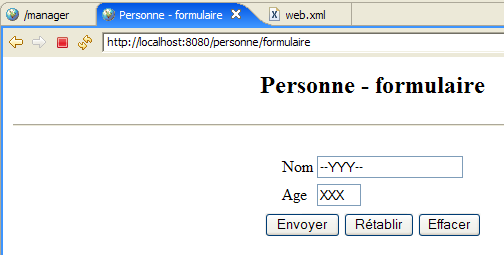
对 [web.xml] 的修改已生效。实际上，在 Tomcat [manager] 应用程序上打开一个浏览器来处理此类情况会非常有用。
3.7. Servlet 与 JSP 页面的交互
参考资料 [ref1]：第 2 章：2.3.7
让我们回到之前探讨过的两种架构：

这两种架构都不尽如人意。它们都存在将两种技术混为一谈的缺陷：Java 编程负责处理 Web 应用程序的逻辑，而 HTML 编码则负责在浏览器中呈现信息。
- 基于 JSP 的解决方案 [1] 存在在同一页面内混用 HTML 代码和 Java 代码的缺陷。在我们之前讨论的那个基础示例中，我们并未看到这一点。但如果 [formulaire.jsp] 需要验证客户端请求中的 [txtNom, txtAge] 参数，我们就不得不将 Java 代码放入页面中。这很快就会变得难以管理。
- 基于 Servlet 的方案 [2] 同样存在这个问题。尽管类中只有 Java 代码，但它必须生成一个 HTML 文档。同样地，除非 HTML 文档非常简单，否则其生成过程会变得复杂，且几乎无法维护。
我们将通过采用以下架构来避免将 Java 和 HTML 技术混用：

- 用户将请求发送至 Servlet。Servlet 处理该请求并构建 JSP 页面 [form.jsp] 的动态参数值，这些值将用于生成发给客户端的 HTML 响应。这些值共同构成了所谓的 JSP 页面模板。
- 工作完成后，Servlet 将请求 JSP 页面 [form.jsp] 为客户端生成 HTML 响应。同时，它会向 JSP 页面提供生成此响应所需的元素——即构成页面模型的元素。
接下来，我们将深入探讨这一新架构。
3.7.1. [ServletFormulaire2] Servlet
在上述架构中，该 Servlet 将命名为 [ServletFormulaire2]。它将与所有未来的 Servlet 一样，构建在之前的 [personne] 项目中：
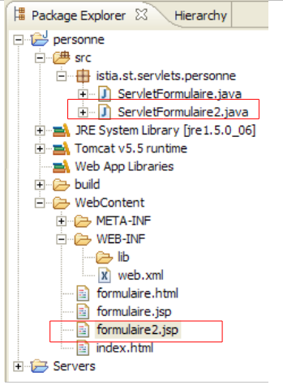
首先在 Eclipse 中通过复制粘贴 [ServletFormulaire] 来创建 [ServletFormulaire2]：
- 选择 [ServletFormulaire.java] -> 右键单击 -> 复制
- 选择 [istia.st.servlets.personne] -> 右键点击 -> 粘贴 -> 重命名为 [ServletFormulaire2.java]
然后，我们按以下方式修改 [ServletFormulaire2] 的代码：
只有生成 HTTP 响应的部分发生了变化（第 44–46 行）：
- 第 46 行：JSP 页面 `formulaire2.jsp` 负责生成响应。该页面（我们尚未涉及）将显示从客户端请求中获取的参数：姓名（第 35–38 行）和年龄（第 39–42 行）。
- 这两个值被放入请求属性中，并关联了键。请求属性以字典的形式进行管理。
- 第 44 行：姓名被存入请求中，并关联键 "name"
- 第 45 行：年龄被放入请求中，并关联键 "age"
- 第 46 行：请求显示 JSP 页面 [formulaire2.jsp]。以下内容作为参数传递给该页面：
- 客户端的请求，这使得 JSP 页面能够访问其属性（这些属性刚刚由 Servlet 初始化）
- 响应 [response]，这将使 JSP 页面能够生成发回给客户端的 HTTP 响应
编写完 [ServletFormulaire2] 类后，其编译后的代码将出现在 [build/classes] 目录中：
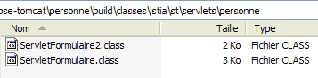
3.7.2. JSP 页面 [formulaire2.jsp]
通过复制并粘贴 [formulaire.jsp] 页面，创建了 JSP 页面 formulaire2.jsp
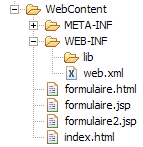
，随后按以下方式进行了修改：
<%@ page language="java" contentType="text/html; charset=ISO-8859-1"
pageEncoding="ISO-8859-1"%>
<!DOCTYPE HTML PUBLIC "-//W3C//DTD HTML 4.01 Transitional//EN">
<%
// on récupère les valeurs nécessaire à l'affichage
String nom=(String)request.getAttribute("nom");
String age=(String)request.getAttribute("age");
%>
<html>
<head>
<meta http-equiv="Content-Type" content="text/html; charset=ISO-8859-1">
<title>Personne - formulaire2</title>
</head>
<body>
<center>
<h2>Personne - formulaire2</h2>
<hr>
<form action="" method="post">
<table>
<tr>
<td>Nom</td>
<td><input name="txtNom" value="<%= nom %>" type="text" size="20"></td>
</tr>
<tr>
<td>Age</td>
<td><input name="txtAge" value="<%= age %>" type="text" size="3"></td>
</tr>
</table>
<table>
<tr>
<td><input type="submit" value="Envoyer"></td>
<td><input type="reset" value="Rétablir"></td>
<td><input type="button" value="Effacer"></td>
</tr>
</table>
</form>
</center>
</body>
</html>
与 [formulaire.jsp] 相比，仅第 4–8 行发生了变化：
- 第 6 行：获取 [request] 中名为 "name" 的属性值，该属性由 [ServletFormulaire2] Servlet 创建。
- 第 7 行：对“age”属性执行相同操作
3.7.3. 应用程序配置
配置文件 [web.xml] 修改如下：
<?xml version="1.0" encoding="UTF-8"?>
<web-app id="WebApp_ID" version="2.4"
xmlns="http://java.sun.com/xml/ns/j2ee"
xmlns:xsi="http://www.w3.org/2001/XMLSchema-instance"
xsi:schemaLocation="http://java.sun.com/xml/ns/j2ee http://java.sun.com/xml/ns/j2ee/web-app_2_4.xsd">
<display-name>personne</display-name>
<!-- ServletFormulaire -->
<servlet>
<servlet-name>formulairepersonne</servlet-name>
<servlet-class>
istia.st.servlets.personne.ServletFormulaire
</servlet-class>
<init-param>
<param-name>defaultNom</param-name>
<param-value>inconnu</param-value>
</init-param>
<init-param>
<param-name>defaultAge</param-name>
<param-value>XXXX</param-value>
</init-param>
</servlet>
<!-- ServletFormulaire 2-->
<servlet>
<servlet-name>formulairepersonne2</servlet-name>
<servlet-class>
istia.st.servlets.personne.ServletFormulaire2
</servlet-class>
<init-param>
<param-name>defaultNom</param-name>
<param-value>inconnu</param-value>
</init-param>
<init-param>
<param-name>defaultAge</param-name>
<param-value>XXX</param-value>
</init-param>
</servlet>
<!-- Mapping ServletFormulaire -->
<servlet-mapping>
<servlet-name>formulairepersonne</servlet-name>
<url-pattern>/formulaire</url-pattern>
</servlet-mapping>
<!-- Mapping ServletFormulaire 2-->
<servlet-mapping>
<servlet-name>formulairepersonne2</servlet-name>
<url-pattern>/formulaire2</url-pattern>
</servlet-mapping>
<!-- welcome files -->
<welcome-file-list>
<welcome-file>index.html</welcome-file>
</welcome-file-list>
</web-app>
我们保留了现有代码，并添加了：
- 第 22–36 行：添加一个 <servlet> 部分，用于定义新的 ServletFormulaire2 Servlet
- 第 42–46 行：添加 <servlet-mapping> 部分，将其与 URL /formulaire2 关联
如有必要，请启动或重启 Tomcat 服务器。我们请求 URL
http://localhost:8080/personne/formulaire2?txtNom=milou&txtAge=10：

我们得到的结果与之前相同，但应用程序的结构现在更加清晰：一个包含应用逻辑的 Servlet，并将向客户端发送响应的任务委托给一个 JSP 页面。从现在起，我们将始终采用这种方式。